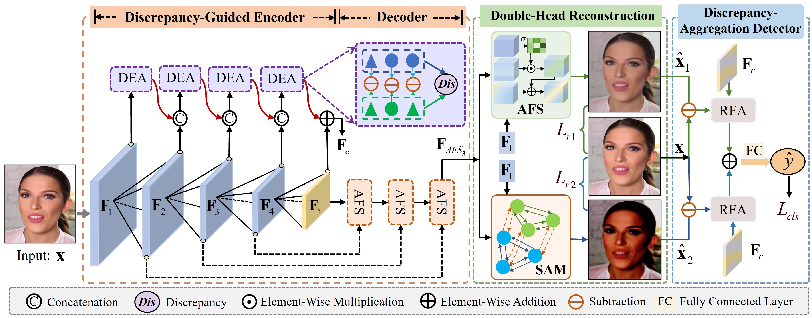

|
Zenan Shi I am currently a postdoctoral researcher at the College of Computer Science and Technology at Jilin University, where I work closely with Prof. Haipeng Chen and Prof. Dong Zhang. Before that, I earned my Ph.D. degree in Computer Science and Technology from Jilin University, where I was supervised by Prof. Xuanjing Shen. From Aug. 2019 to Aug. 2020, I was supported by the China Scholarship Council as a joint Ph.D. student at MReaL Lab of Nanyang Technological University (NTU), supervised by Prof. Zhang Hanwang. I'm interested in deepfake detection, computer vision, and medical image analysis. |

|
News
|
Publication [Google Scholar] |
|  |
Discrepancy-Guided Reconstruction Learning for Image Forgery Detection
Zenan Shi, Haipeng Chen, Long Chen, Dong Zhang, International Joint Conference on Artificial Intelligence, IJCAI 2023 [Paperlink], [Code] |
|
Transformer-auxiliary neural networks for image manipulation localization by operator inductions
Zenan Shi, Haipeng Chen, Dong Zhang, IEEE Transactions on Circuits and Systems for Video Technology, TCSVT 2023 [Paperlink], [Code] we propose a novel image forgery detection paradigm for boosting the model learning capacity on both forgery-sensitive and genuine compact visual patterns. |
|
|
Pretraining-Driven Multimodal Boundary Aware Vision Transformer
Zenan Shi, Haipeng Chen, Dong Zhang, Xuanjing Shen, Journal of Software (in Chinese), 2022 [Paperlink], [Code] |
|
Pretraining-Driven Multimodal Boundary Aware Vision Transformer
Zenan Shi, Haipeng Chen, Long Chen, Dong Zhang International Joint Conference on Artificial Intelligence, IJCAI 2023 <[Paperlink], / [Code] / project page We introduce DisCo, which includes a novel model architecture with disentangled control to improve the faithfulness and compositionality of dance synthesis, and an effective human attribute pre-training for better generalizability to unseen humans. |
Zenan Shi, Haipeng Chen, Long Chen, Dong Zhang*
International Joint Conference on Artificial Intelligence, IJCAI 2023
[Paperlink], / [Code] / project page
Fundings
|
professional-services-reviewers 🌻
|
|
This awesome template borrowed from Jon Barron~ |